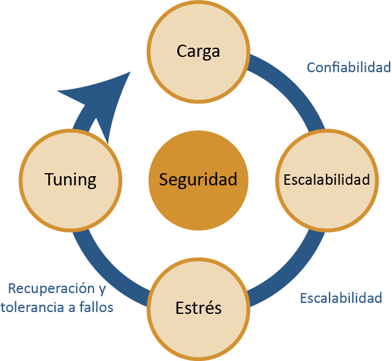

Las pruebas no funcionales incluyen las pruebas de rendimiento, carga, estrés, usabilidad, portabilidad y fiabilidad. Para ejecutar estas pruebas se realizan normalmente ejecuciones con muchos datos dentro de la funcionalidad que se esté analizando y también se ejecuta de manera automatizada con herramientas como jmeter, que permiten ejecutar varios agentes a la vez para emular carga alta y medir el estrés soportado por la funcionalidad. |

|